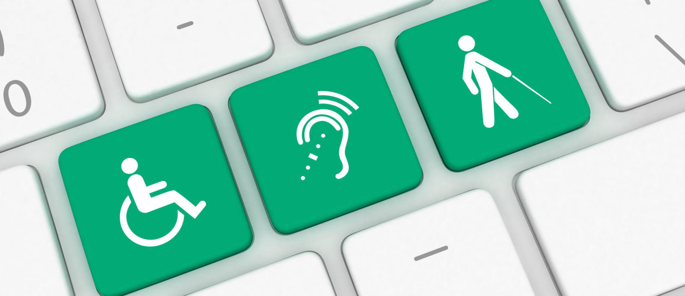

Veille Technologique
Le principal avantage de la Veille Technologique est d'identifier ou de prévoir les innovations dans les business units. Les ressources de la veille technologique constituent des informations stratégiques importantes pour anticiper, développer et exploiter les inventions. La mise en place d'une observation technique permanente dans une zone définie peut répondre à plusieurs objectifs. Cela jette les bases pour identifier et comprendre les informations clés sur les concurrents et les technologies. C'est une méthode de collecte d'informations stratégiques sur les concurrents et leurs innovations.
THÉMATIQUE CHOISIE
- L’accessibilité, le passeport du net pour les malvoyants.
- 
- Étant un sujet trop peu traitrée sur internet, j'ai choisis ce thème afin d'en apprendre davantage sur cette pratique, pouvant m'aider à m'orienter dans la conception de plateformes front-end disponible pour tous.
- Afin de développer cette veille j'ai effectué des recherches sur de nombreux articles, utilisant plusieurs sites d'information différents :
- Pour réaliser cette veille, j'utilise l'aggrégateur de flux RSS Feedly pour visualiser des articles autour de différents thèmes (cybersécurité, développement...), puis je sélectionne les articles pertinents, les trie, et les enregistre grâce à l'outil Pearltrees, visible ci-dessous :
- Samalairbien
| Numéro | Nom de l'article | Site web | Date de publication |
|---|---|---|---|
| Article n°1 | Accès des malvoyants aux sites internet des services publics : la Belgique est en retard | www.rtbf.be | 23 Septembre 2020 |
| Article n°2 | Comment les malvoyants sont discriminés dans l'accès aux services publics en ligne | www.01net.com | 09 Octobre 2020 |
| Article n°3 | Accessibilité des sites internet : Que dit la loi aujourd’hui ? | www.handirect.fr | 09 Novembre 2019 |
| Article n°4 | Les 10 meilleurs conseils pour améliorer l'accessibilité numérique de son site web | blog.ipedis.com | 25 janvier 2019 |
| Article n°5 | Introduction à l'accessibilité du web | www.w3.org | 05 juin 2019 |
Résumé des articles
Article 1
"Depuis ce 23 septembre 2020, pour se conformer à une directive européenne, les sites internet des services publics (administrations, provinces, communes) doivent être accessibles aux personnes en situation de handicap. Le but est de venir en aide aux 15% de la population qui souffrent d’un handicap visuel, auditif, cognitif ou moteur. De plus, cela améliorera également l’accès pour tous. Cette obligation d’accessibilité sera étendue aux applications mobiles des services publics à partir du 22 juin 2021..."
Résumé rapide : Depuis 2020, une loi a obligé les sites internet des services publics à se conformer à cette loi afin de se rendre accessible aux personnes en situation de handicap. Cette loi permet l'intégration (de 15%) de la population ayant un handicap sur les sites internet afin de les aider à mieux voir, comprendre et percevoir les informations inscrites sur les sites.
Article 2
"...En France, l’accessibilité numérique est une obligation légale depuis plus de quinze ans, réitérée en 2016 par la loi pour une République numérique. Par la directive de 2018 relative à l’accessibilité des sites internet et des applications mobiles des organismes du secteur public, l’Union européenne (UE) a également enfoncé le clou. Les États membres avaient jusqu’au 23 septembre 2020 pour se mettre en conformité. La France est donc toujours hors-la-loi, mais la Commission n'a pas prévu de sanctions financières..."
Résumé rapide : Cette loi est passée tout d'abord aux nombreuses personnes ayant du mal à accéder aux sites internet. Mais aussi aux nombreuses plaintes reçu pendant les années précédentes. Un exemple banal, qui peut paraître un enfer pour ces personnes concernées : refaire sa carte d’identité ou son permis de conduire en ligne. Car presque 77 % des 250 services publics en ligne n'étaient pas accessibles aux 12 millions de Français en situation de handicap, c’est-à-dire qu’ils n'étaient pas conçus pour être retranscrits à l’oral ou en braille par un lecteur d’écran pour ceux qui en ont besoin.
Article 3
"... À compter du 23 septembre 2019 sont concernés les sites internet créés depuis le 23 septembre 2018. À compter du 23 septembre 2020 sont concernés les sites internet créés avant le 23 septembre 2018. À compter du 23 juin 2021 sont concernés les applications mobiles, les progiciels et le mobilier urbain numérique."
Résumé rapide : Cette loi ne s'applique qu'à certains sites internet selon leur date de mise en service. Plus les sites sont anciens, plus l'application de cette loi se fera tôt. Les derniers concernés sont les applications mobiles. Car généralement les sites conçus récemment ont pensé à s'adapter aux nouvelles réformes.
Article 4
"... L'accessibilité numérique d'un site web consiste à permettre aux personnes en situation de handicap d’accéder au contenu d'un site Internet. Les administrations publiques et les entreprises affiliées sont encouragées à suivre un ensemble de bonnes pratiques pour l'accessibilité numérique de leur site web, en se basant sur les recommandations du WCAG 2.1 ..."
Résumé rapide : Afin de rendre les sites internet accessibles, selon l'obligation d'accessibilité du RGAA (Référentiel Général d'Amélioration de l'Accessibilité) plusieurs solutions sont proposées, mais nous allons nous intéresser aux solutions HTML. Le premier exemple est de trouver une alternative textuelle pertinente pour l'affichage des photos en utilisant dans la balise < img> "ALT=". Grâce à cette alternative, la personne ayant un lecteur d'écran tel que JAWS (Job Access With Speech) ou bien NVDA (NonVisual Desktop Access) peut profiter d'avoir accès au contenu de l'image. Respecter les standards d'accessibilité HTML, en utilisant des polices d'écriture accessibles à tous. Des technique de braille sont aussi accessible à tous, comme ajouter un clavier braille en dessous du clavier standard permettant de retransmettre les information du site.
Article 5
"... Rendre le web accessible est un avantage pour les internautes, les entreprises et la société. Les standards du web internationaux définissent ce qui est nécessaire pour l’accessibilité..."
Résumé rapide : Le WCAG est une norme ISO afin de permettre un égal accès aux innovations technologiques pour les personnes en situation de handicap. Cet article montre tous les critères du WCAG. Ces critères veille à bien avoir en toute accessibilité : des sous-titres, une alternative médiatique lorsqu'il y à une image, un audio ou une vidéo, l'interprétation gestuelle pour tout le contenu audio préenregistré, la forme, la couleur, la taille, l'emplacement visuel, l'orientation, le texte peut être redimensionné, La taille de la cible pour les entrées de pointeur est d'au moins 44 par 44 pixels CSS.
Conclusion tirée
- En France l’accessibilité est une mesure normalement obligatoire pour les sites de services publiques ou autres, et ce depuis le 11 février 2005 grâce à l’article 41 et 47, obligeant ces organismes à rendre disponible d’accès leur site pour les personnes handicapés sous peine d’une sanction administrative dont le montant, qui ne peut excéder 25 000 €.
- Cependant ces démarches n’ont que peu d’effet prenant compte du fait que le gouvernement, par la voix du secrétaire d’État chargé du Numérique, s’est engagé à ce que 80% des 250 démarches en ligne les plus utilisées par les Français soient rendues accessibles pour 2022. Des chiffres qui n’ont malheureusement pas pu être tenu, au jour du 3 février 2022, 37% des 241 démarches en ligne les plus utilisées par les Français sont accessibles.
- L’accessibilisation est une chose que tous les développeurs sont capables d’intégrer à condition de s’y prendre depuis le début de la conception de la plateforme, si oublié ou négligé il est naturel que la mise en place de ces modifications puisse prendre plus ou moins de temps selon les spécificités du site.
- L’utilisation d’un code utilisant des balises sémantiques est nécessaire, l’étiquetage des attributs d’une page permet à des logiciels spécialisés de dicter de manière audible la description ou la fonction des éléments ciblés. D’autres moyens plus subtils de l’accessibilisation sont l’adaptions des tailles des caractères ainsi que d’un bon contraste couleur pour une bonne visibilité.